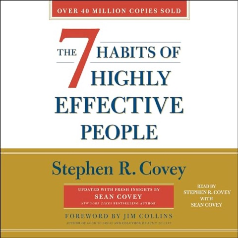
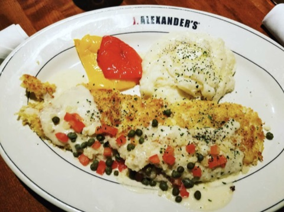
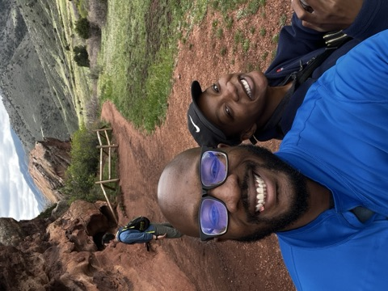
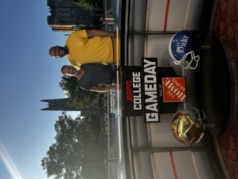
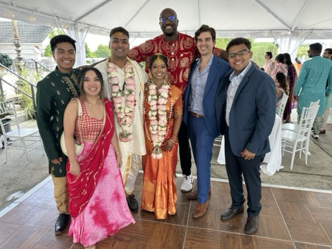
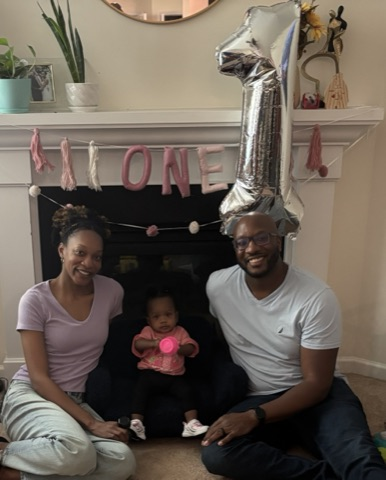
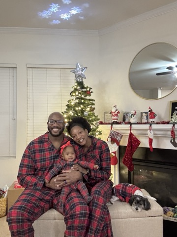
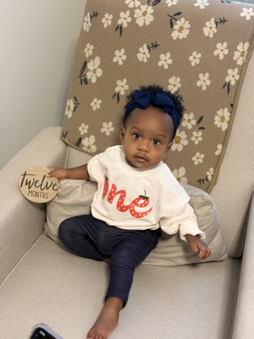
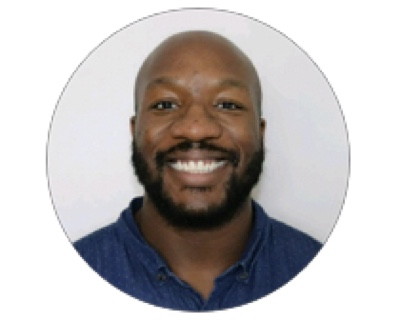

Outside work








Honeywell manager before Cisco. CSAP ASE → Collab SE → Collaboration Renewals SE. Collab renewals below 50% → 70%+.

Kenneth Onyebinachi Jr.
Collaboration Renewals SE · Cisco
B.S. Computer Engineering, UAH '16
LinkedInStarted in Cisco's CSAP program as an Associate Solutions Engineer (ASE). Four years as a Collaboration Solutions Engineer (Collab SE), helping sales and partners with Webex and collaboration technology. Collaboration Renewals SE since Jan '24. At Honeywell I managed a team: sprints, onboarding, engineers in the US and overseas.
I went through this program myself, so I understand the pressure, uncertainty, and learning curve that comes with starting out.








I went through this program myself. That pressure, uncertainty, and learning curve helps me connect with early-career SEs in a genuine way.
Engineering, presales, customer engagement, automation, onboarding, enablement. I help ASEs build technical skills and the communication, adaptability, and business mindset to succeed long term.
I grew from deeply technical roles into a strategic, customer-focused professional. That journey is how I guide technical and professional growth.
How I show up for people and teams.
I'm an outcomes-driven, collaborative leader: transparency, accountability, trust, open communication, empathy, adaptability. I align teams on business objectives and customer success, solve complex problems, and create an environment where people feel empowered and motivated. Renewal performance from below 50% to over 70% came from closing adoption gaps and strengthening stakeholder engagement, not slide decks alone.
Energy up or down, I adjust. Training, 1:1s, customer prep.
Comfortable with customers, sellers, partners.
Good session → follow-through. Adoption, shadow completions, first wins logged.
Strengthen and modernize the program so associates build technical expertise, business acumen, and customer-facing confidence earlier. Create a scalable path from ramp to real customer contribution.
Assess the program, tighten readiness metrics, pilot improvements with measurable impact, then scale what works. Prioritize earlier customer and executive exposure alongside consultative skill-building. By day 180: clear milestones, standardized coaching, leadership alignment, and a 12-month roadmap.
Days 1-30
Objective
Understand program health, strengths and gaps, and define how success will be measured.
Key Actions
Deliverables
Days 31-60
Objective
Design enhancements that accelerate customer-facing readiness and business acumen.
Key Actions
Deliverables
Days 61-90
Objective
Validate enhancements and identify what delivers the greatest impact before scaling.
Key Actions
Deliverables
Days 91-180
Objective
Expand proven initiatives, standardize best practices, and position the program for long-term success.
Key Actions
Deliverables
Faith and family ground me. I want to leave teams and systems better than I found them: workflows that save time, onboarding that actually works, room for people to swap knowledge.
I enjoy speaking with young people who don't often have examples of people like them in corporate roles and sharing what I've learned along the way.
I believe effective leadership is defined not only by delivering results, but by building high-performing teams capable of navigating change, strengthening relationships, and consistently executing against organizational goals.